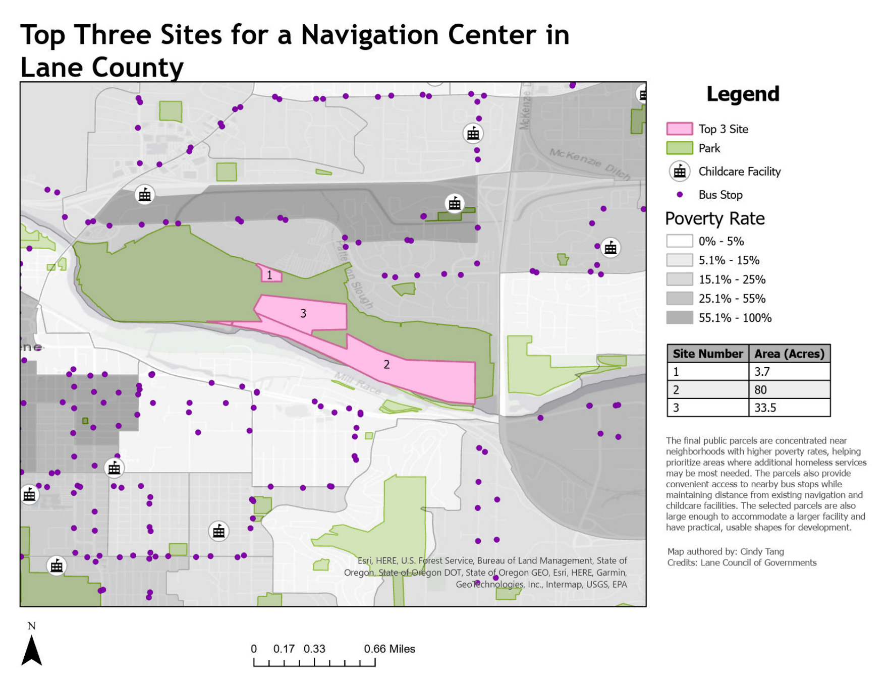

GIS · PLANNING · SITE SUITABILITY
Navigation Center Site Selection.
Used ArcGIS Pro to identify potential sites for a Navigation Center in Eugene-Springfield, narrowing public parcels based on size, land status, transit access, nearby services, and surrounding community factors.

process
I identified vacant or underdeveloped parcels at least one acre within the Eugene-Springfield Urban Growth Boundary, then narrowed them to publicly owned parcels for final review.
methods
Parcel filtering, Urban Growth Boundary selection, buffers around homeless-serving facilities and transit stops, and contextual review of poverty, parks, downtown boundaries, and school and childcare locations. Three sites were selected for closer evaluation.
tools
ArcGIS Pro · Site Selection · Buffers · Parcel Analysis